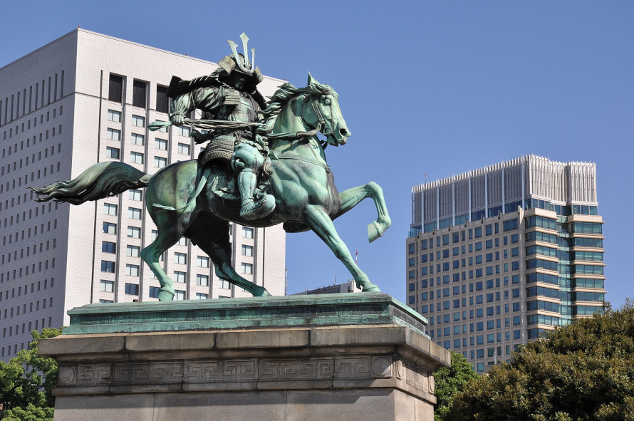
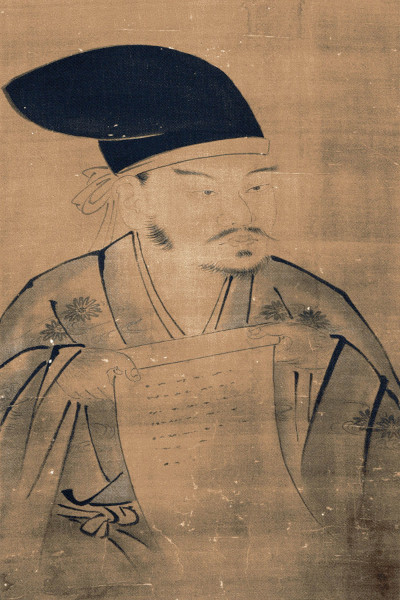

Kusunoki Masashige (楠木 正成, 1294 – 4 de julho de 1336) foi um samurai japonês do período Kamakura lembrado como o samurai leal ideal.
Kusunoki lutou pelo Imperador Go-Daigo na Guerra Genkō para derrubar o xogunato Kamakura e restaurar o poder no Japão à Corte Imperial . Kusunoki foi uma figura importante da Restauração Kenmu em 1333 e permaneceu leal ao impopular Imperador Go-Daigo depois que Ashikaga Takauji começou a reverter a restauração nas guerras Nanboku-chō, três anos depois. Kusunoki atacou Takauji em Settsu sob o comando do Imperador, um ato de obediência que certamente resultaria em derrota, e morreu na Batalha de Minatogawa em 1336.
Kusunoki se tornou uma lenda popular no Japão, representando lealdade e virtude , e associada à frase "Gostaria de ter sete vidas para dar pelo meu país!" (七生報國; " Shichishō Hōkoku! "). Kusunoki foi condecorado postumamente com o posto mais alto da corte no Japão, Primeiro Grau Sênior ( shō ichi-i) , pelo governo Meiji em 1880, mais de 500 anos após sua morte.

Estátua de Kusunoki Masashige fora de seu palácio em Tóquio
Juventude
A origem de Kusunoki Masashige não foi validada e passaram-se apenas seis anos entre o início de sua campanha militar em 1331 e sua morte em 1336. Acredita-se que Kusunoki tenha nascido em 1294 na província de Kawachi como um "membro abastado de a pequena nobreza rural " e afirmava ser descendente de Tachibana Moroe , "um grande nobre" do século VIII. Seu local de nascimento está ligado à vila de Chihaya-Akasaka, onde pode ser encontrado um pequeno monumento chamado "Nanko Tanjochi".
Kusunoki era um "estudioso e budista devoto ", com grande parte de sua educação inicial ocorrendo no Templo Kanshin-ji em Kawachinagano, no atual sul da província de Osaka . Mais tarde em sua vida, Kusunoki providenciaria reformas consideráveis no templo. Enquanto estudava em Kanshin-ji, ele fazia viagens regulares ao centro de Kawachinagano para estudar estratégia sob a tutela de um homem chamado Oe Tokichika.
Segundo a lenda, o imperador Go-Daigo teve um sonho em que se abrigava debaixo de uma árvore de cânfora (" kusunoki " em japonês ), e que esse sonho o levou ao sobrenome do guerreiro que o apoiaria.
Carreira militar
Um tático e estrategista brilhante, a defesa astuta de Kusunoki de duas fortalezas legalistas importantes em Akasaka , o Cerco de Akasaka , e Chihaya , o Cerco de Chihaya , ajudou a permitir que Go-Daigo retornasse brevemente ao poder. Ele viveu durante o período Kamakura .
Em 1333, Go-Daigo recompensou Masashige com o governo da província de Settsu e da província de Kawachi . Além disso, ele foi promovido ao Quinto Grau. Mais tarde, ele foi nomeado para o Registros e Conselho de Assentamentos.
No entanto, um dos generais legalistas, Ashikaga Takauji , traiu Go-Daigo e liderou um exército contra Kusunoki e os restantes legalistas.Takauji foi capaz de tomar Kyoto, mas apenas temporariamente antes que Nitta Yoshisada e Masashige conseguissem desalojar Takauji, forçando-o a fugir para o oeste. Em 1336, entretanto, Takauji era uma ameaça para Kyoto novamente
Kusunoki sugeriu ao Imperador que eles se refugiassem no sagrado Monte Hiei e permitissem que Takauji tomasse Kyoto , apenas para descer da montanha e, com a ajuda dos monges do Monte Hiei, prender Takauji na cidade e destruí-lo.
Go-Daigo, entretanto, não estava disposto a deixar a capital e insistiu que Kusunoki enfrentasse as forças superiores de Takauji no campo em uma batalha campal. Kusunoki, no que mais tarde seria visto como o último ato de lealdade do samurai, obedientemente aceitou o comando tolo de seu imperador e conscientemente marchou com seu exército para a morte quase certa. A batalha, que ocorreu em Minatogawa , na atual Chūō-ku , Kobe , foi um desastre tático. Existem dois relatos da proposta feita por Kusunoki Masashige ao imperador Go-Daigo, o Taiheiki e o Baisho Ron . Uma foi que eles se reagruparam e atacaram de dois lados, a outra foi que eles trouxeram de volta o general Takauji para o seu lado, equilibrando assim a balança. Ambos os argumentos foram ignorados.
Kusunoki, com seu exército completamente cercado, ficou reduzido a apenas 50 dos 700 cavaleiros originais. Segundo a lenda, as últimas palavras de seu irmão Masasue foram Shichishō Hōkoku! (七生報國; "Gostaria de ter sete vidas para dar pelo meu país!") e Kusunoki Masashige concordou. Após sua morte, sua cabeça foi removida e enviada para Kanshin-ji , onde foi enterrada em um kubizuka .
Legado
Seu filho, Kusunoki Masatsura , serviu ao sucessor do imperador, Go-Murakami , de 12 anos , em uma relação de confiança e devoção recíprocas, espelhando a figura de seu pai Kusunoki e mantendo viva a chama da resistência legalista. Masatsura morreu ao lado de seu irmão Masatoki e primo Wada Takahide em uma batalha que viu o fim do clã Kusunoki e seguiu-se uma luta nada ideal por poder e ganho entre as Cortes.

Retrato de Kusunoki Masashige. Feito por Kanō Sanraku.
Kusunoki “permanece na história de seu país como a figura ideal de um guerreiro, compacto de virtudes civis e militares em alto grau”.
A separação de Masashige de seu filho "costumava ser incluída em todos os leitores do ensino fundamental e era tema de uma canção patriótica que era popular nas escolas japonesas antes da Segunda Guerra Mundial ".